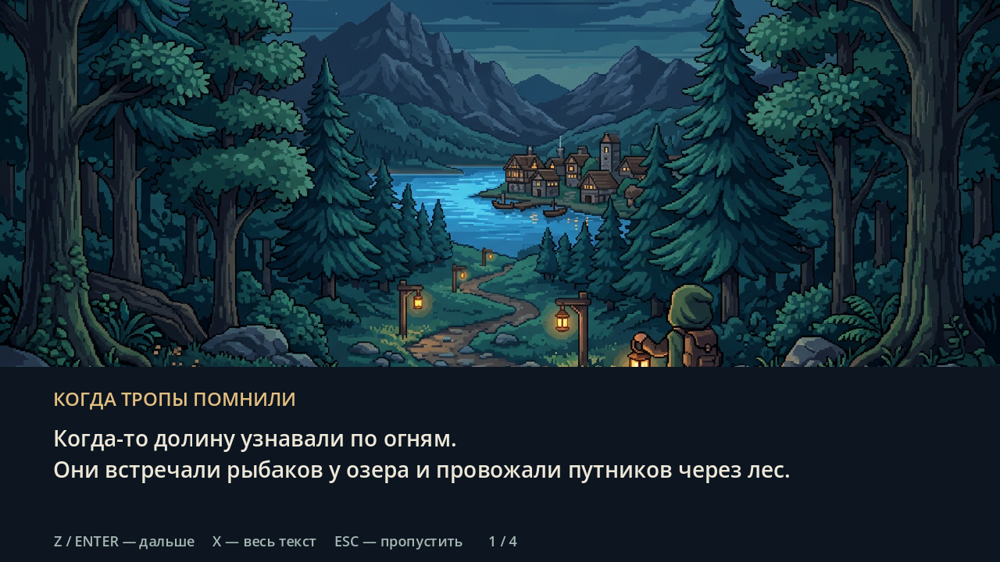
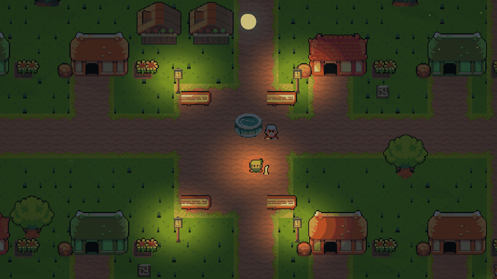
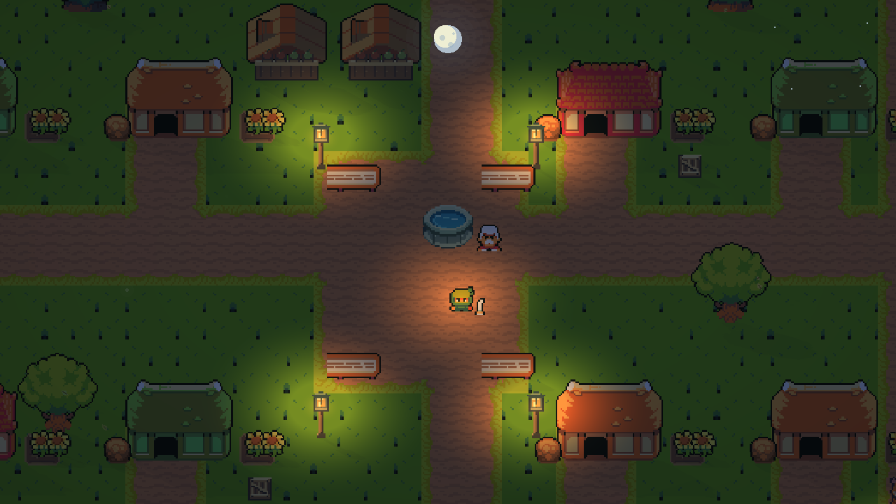
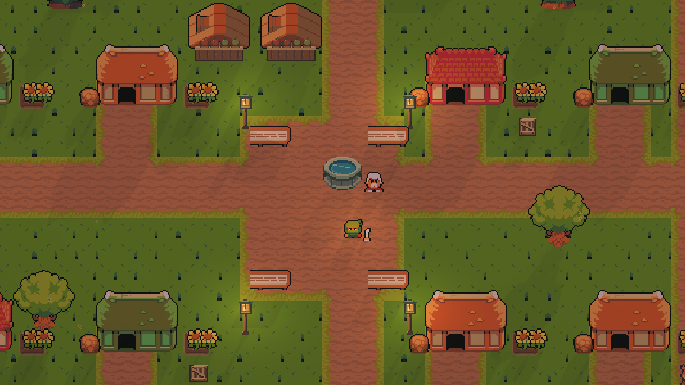
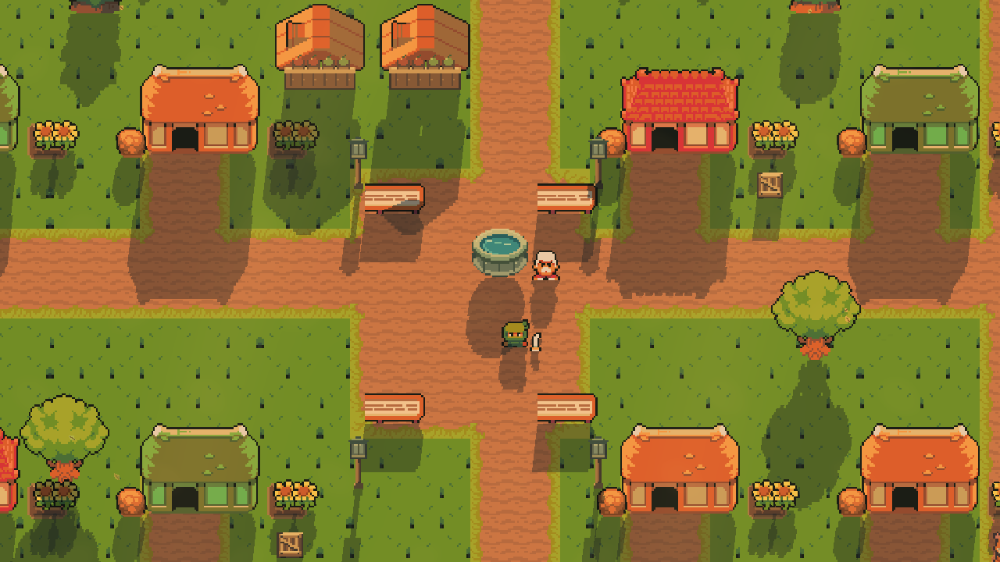
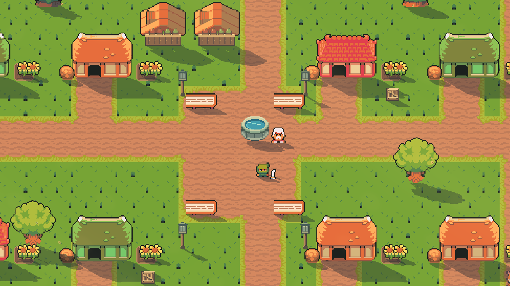
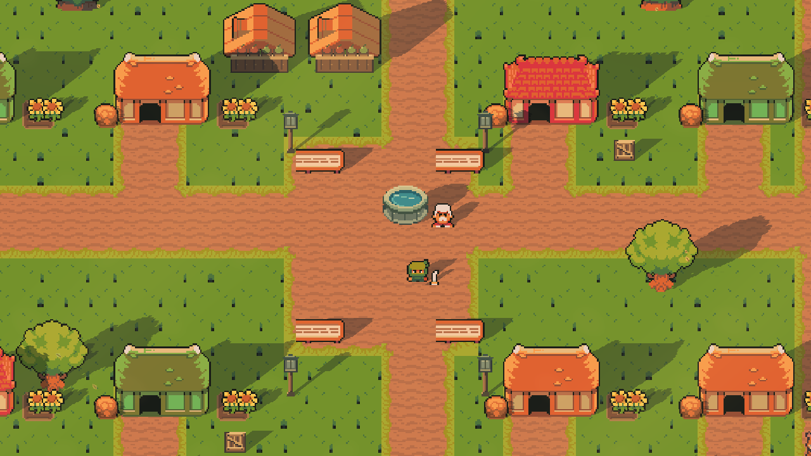
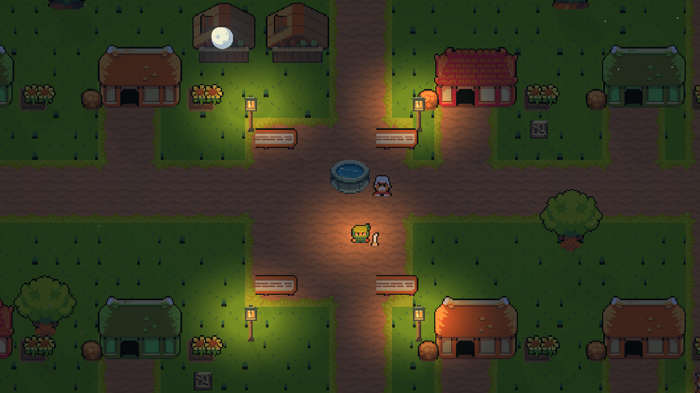
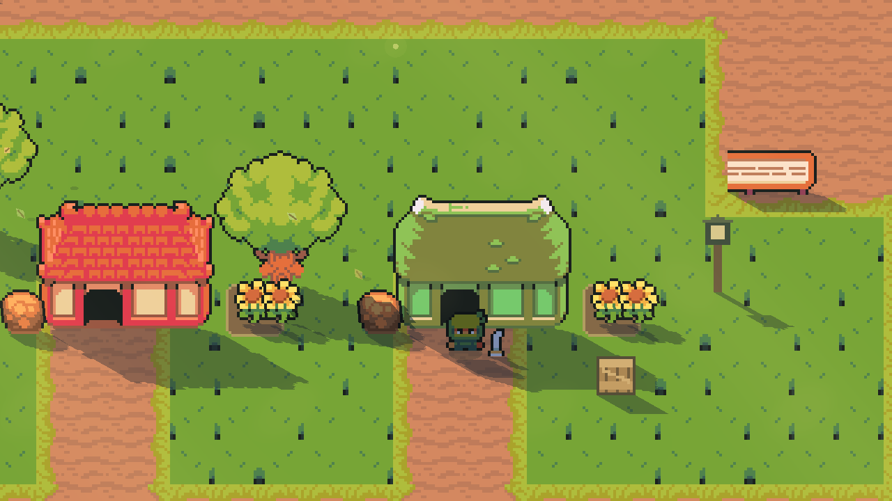
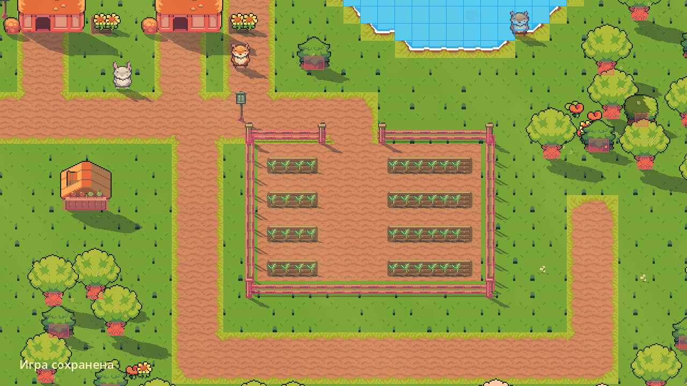

Фонарщик · Тихая долина 0.3.0 Настоящие кадры viewport Godot 4.7.2 / Compatibility / Mesa software. Это не аппаратный FPS-тест. Иллюстрации внутри пролога созданы ИИ с референсом одного героя.
Отчёт о проверке · Машиночитаемые результаты
Пролог — настоящие кадры Godot 
Сцена 1: один герой, отдельная иллюстрация Сцена 2: один герой, отдельная иллюстрация Сцена 3: один герой, отдельная иллюстрация Сцена 4: один герой, отдельная иллюстрация Непрерывный ход солнца и луны 
Ускоренный цикл: фиксированные камера и позы, меняется время суток 
00:00 — слабые лунные тени 
06:15 — начало новой игры 
08:00 — утреннее солнце 
12:00 — полуденные тени 
16:00 — обратное направление 
23:00 — лунный свет Проверки мира 
Тень на фасаде и герое Животные и контакт с землёй 
Ферма: видимые физические коллизии Озеро: видимые физические коллизии